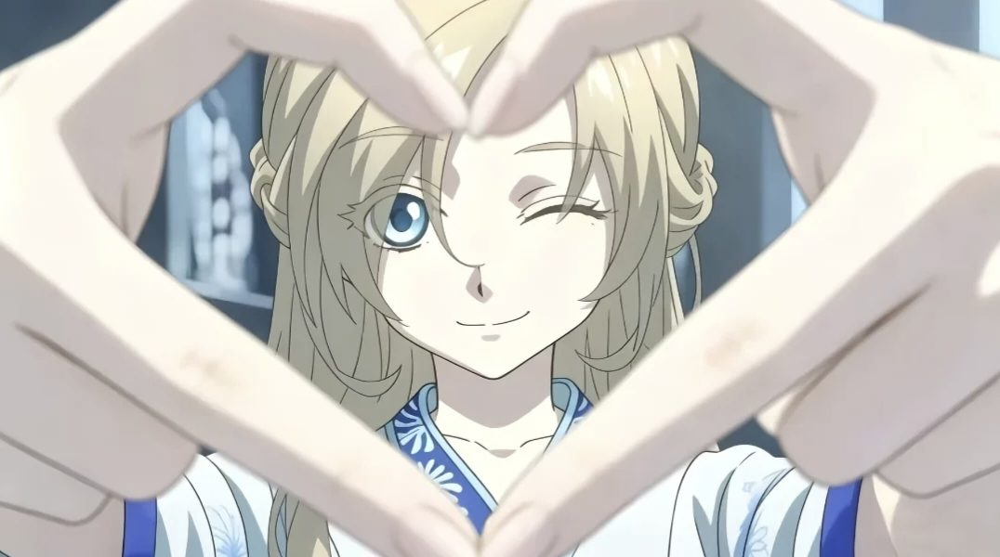
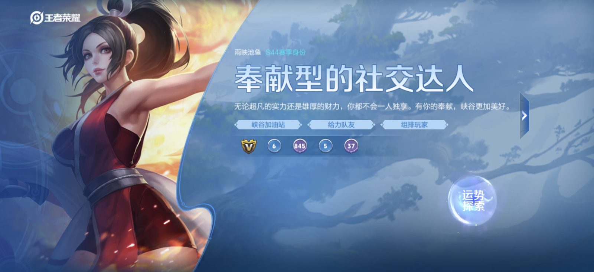
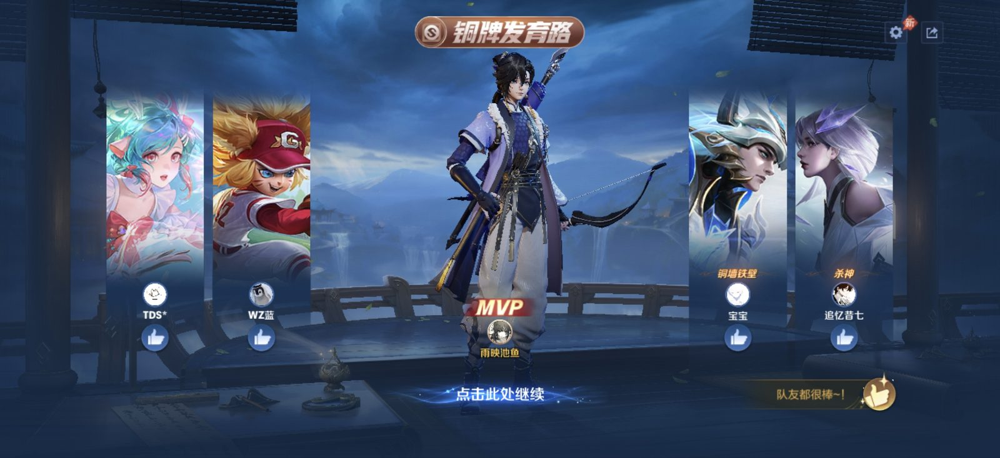
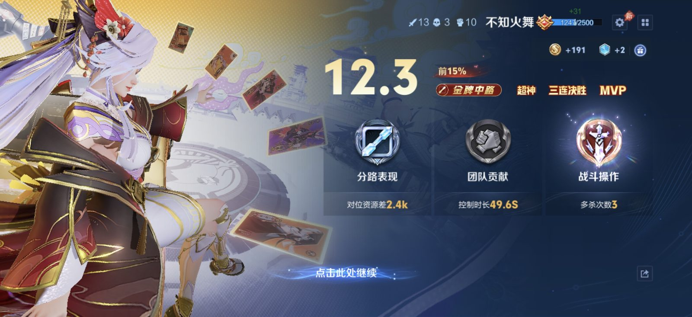
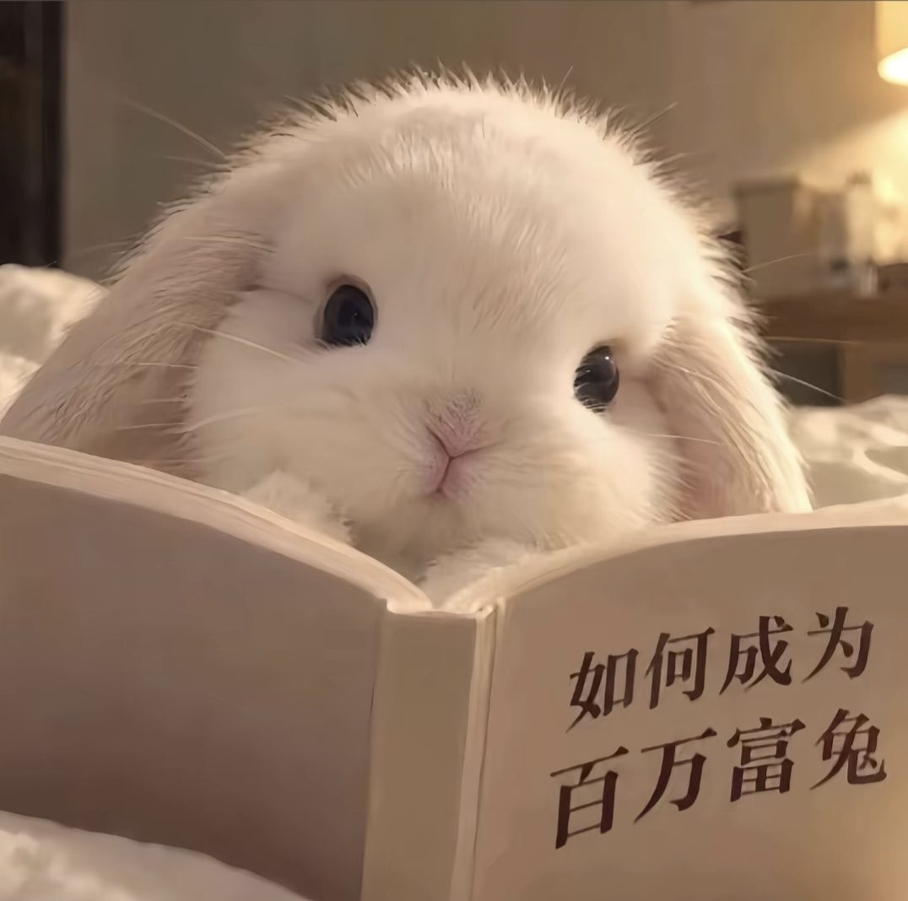
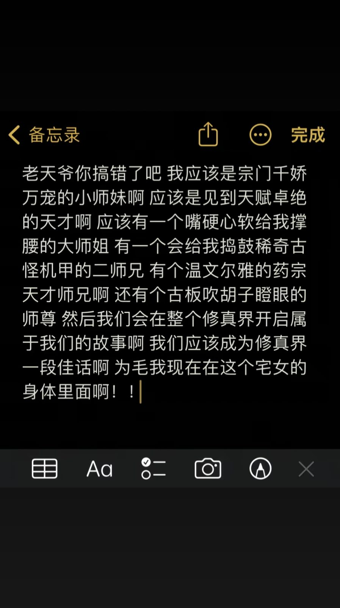
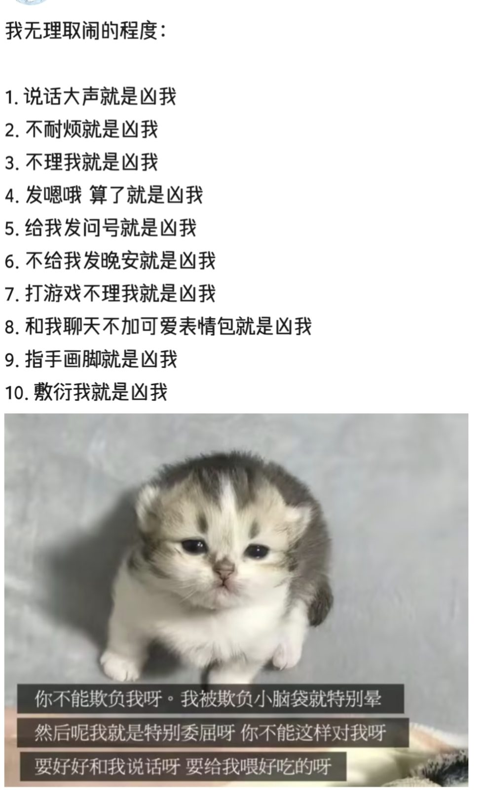
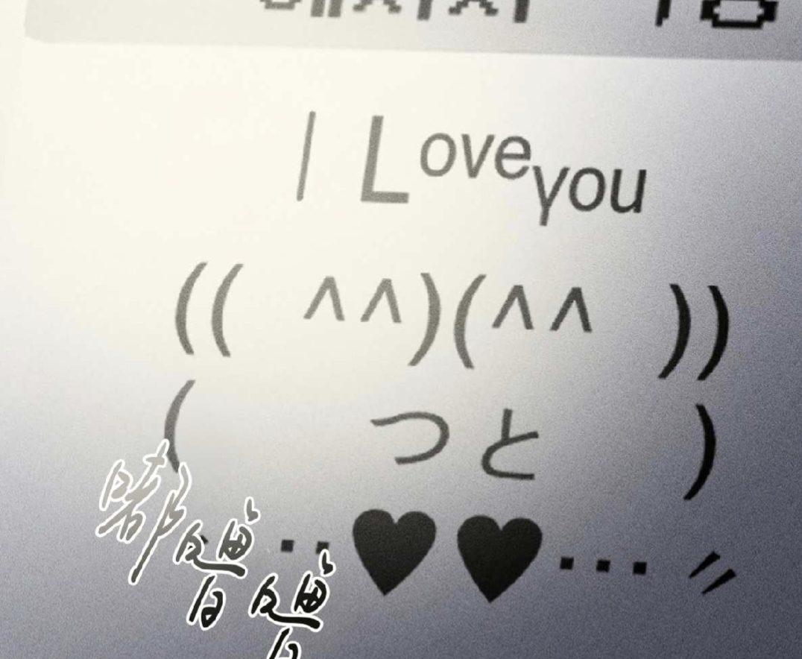
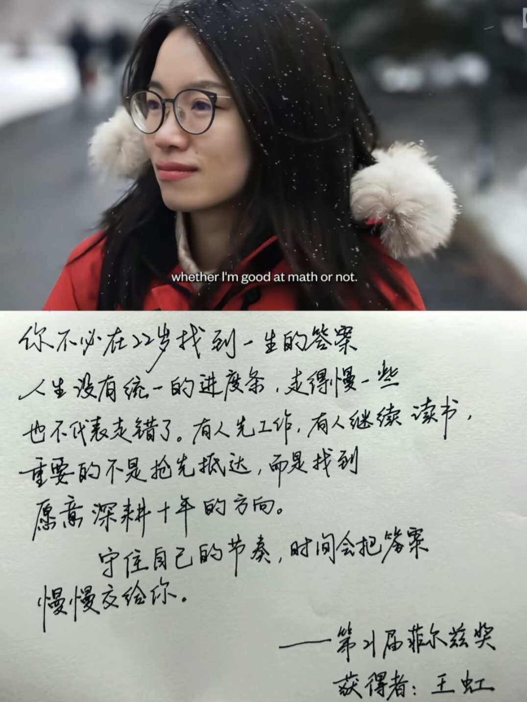
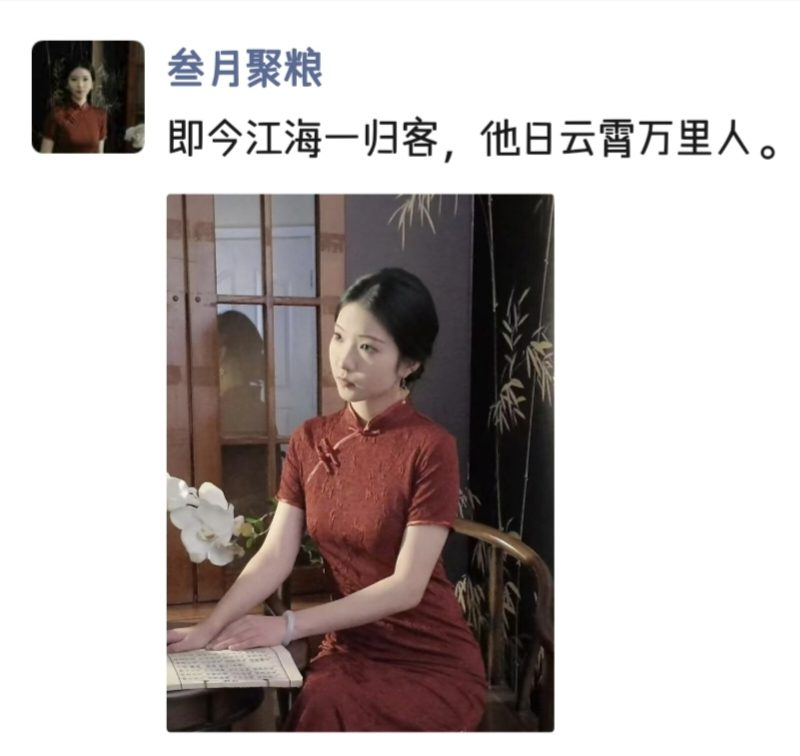

《龙族》
最喜欢的一套书。路明非有点怂、有点笨，但关键时刻特别勇——看的时候总觉得有点像自己。
书、动漫、游戏，还有一些半夜写下的、不太靠谱的想法，都堆在这一页。
看得很杂，但喜欢的会反复看。
最喜欢的一套书。路明非有点怂、有点笨，但关键时刻特别勇——看的时候总觉得有点像自己。
喜欢跟着线索一起猜凶手。猜错也不难过，被作者骗一次反而是种享受。
睡前的固定仪式，看两章就困了。催眠效果比什么都稳定。
不沉迷，但确实是我放松的方式。





想象力比较放飞，半夜尤其严重。



存下来，偶尔拿出来看看。


推荐书、约一局、或者聊聊《龙族》，都很欢迎。